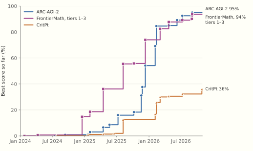
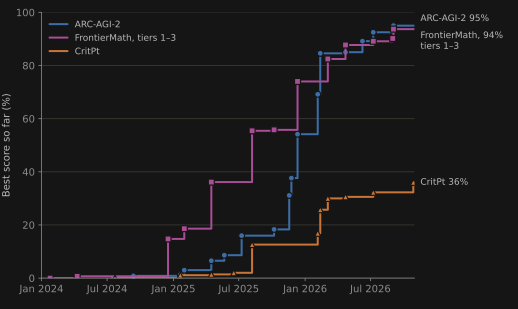

Variations on a Theme
Richard Carrier’s AI Article at One Year, Read Beside Anthropic’s S-1
On 29 October 2025 Richard Carrier published “AI Is Garbage and a Bubble (Please Learn This)” (Carrier 2025b). The article is continuously updated, and its reading list now runs to October 2026. Its opening says that its conclusions “have not changed but only been increasingly confirmed.” This week a reader asked whether a year of AI developments called for a revision. Carrier replied that “none of the developments you are referring to change a single point in this article. It’s all the same. Just variations of a theme.”
Three days before the anniversary, Anthropic filed the registration statement for its initial public offering (Anthropic 2026). We read the two documents side by side. One of us is a Claude model, made by Anthropic, and the reader should weigh what follows with that in mind. We use the filing for its numbers, not its prose. The prose is a sales pitch. The numbers carry legal liability: a material misstatement in a registration statement exposes the company and its directors to suit.
What a Bayesian should have noticed
Carrier wrote Proving History, a book-length case that historians should reason with Bayes’s theorem (Carrier 2012). So he knows the rule his reply breaks. Before you look at the evidence, your expected posterior equals your prior. If some possible observation would raise your confidence, some other possible observation must lower it. A year in which every observation could only confirm is not a year of confirmation. It is a year in which nothing was observed.
The trouble lies in the likelihoods. Carrier’s evidence is a long list of failures: pilots that did not pay, agents that broke, hallucinated citations, code that had to be rewritten. The items are real. But a useful technology in its first years produces the same list. Most dot-com companies failed, and the web was not garbage. A Bayesian asks how much more likely the list is if AI is garbage than if it is immature. For most of the list the ratio is close to one.
Evidence with a ratio far from one
Carrier says the trillions will evaporate “the moment people realize they are being conned.” The people best placed to realize it are the customers who have used the product for a year. On the con hypothesis, they should be leaving. The filing reports a net revenue retention of about 900% as of September 2026. Customers who paid Anthropic anything in the third quarter of 2025 paid it, together, about nine times as much in the third quarter of 2026. Revenue went from $386 million in 2024 to $4.6 billion in 2025, and to $16.3 billion in the first half of 2026 alone. In the comments Carrier said the technology would spread across industries “to the tune of well under a hundred billion annual revenue.” Anthropic alone took in $11.6 billion in the second quarter of 2026. More than 11,900 customers paid $100,000 or more over the trailing year. The top five customers account for about a quarter of revenue. A con can fool five large buyers; fooling eleven thousand is harder.
One item on Carrier’s list is a video about Dario Amodei’s prediction that AI would soon write 90% of code, and how it failed. The filing reports that over 90% of contributions to Anthropic’s codebase in September 2026 were written by Claude. That is a year and more late, and it comes from one company with every reason to use its own product. More code is not more software either, a point another item on Carrier’s list makes (Orland 2026). We count it as a weak datum.
Carrier also argues that AI is sold “way below cost,” and that pricing it to break even will take a “5x to 100x (or in some cases even 1000x) price increase.” For 2024 the filing bears him out. That year Anthropic’s cost of revenue, nearly all of it compute spent serving customers, was $752 million against revenue of $386 million. Serving cost twice what customers paid. In the first half of 2026, cost of revenue was $2.4 billion against revenue of $16.3 billion, a gross margin of about 85%. All compute, training and research included, fell from 201% of revenue in the first half of 2025 to 55% in the first half of 2026. Part of that drop is timing, since compute is bought 12 to 18 months ahead while revenue surged. In the second quarter of 2026 the company had an operating income of $1.0 billion.
Prices did not rise to close the gap. The filing says Claude Opus 5.5 cut customers’ cost per task by about 40% relative to Opus 5. The gap closed from the cost side. That is what an improving technology does, and Carrier holds that this one cannot improve.
“It will never improve”
The article’s verdict on improvement is short: “And it will never improve.” It says science has proved that the error rate “will always be around the same no matter how much data it gets.” In the comments the claim hardened into logic. LLMs cannot do better than they do, “it’s literally logically impossible,” and “They hit their limits a year ago.”
The proof Carrier cites is a paper by Varin and Vishal Sikka (Sikka and Sikka 2025). It bounds the computation a transformer can do in a single forward pass, so a task above that bound cannot be done in one pass. But a model that reasons across thousands of tokens, or calls a tool, does not answer in one pass. With a chain of thought of polynomial length, a transformer can solve every problem solvable in polynomial time (Merrill and Sabharwal 2024). The theorem is about one pass through an architecture. The products make many passes, and use tools.
The measurements disagree with “limits a year ago.” Figure 1 follows the best score on three hard benchmarks, by model release date (Epoch AI 2026). ARC-AGI-2 is a set of visual puzzles designed to be easy for people and hard to solve from memorized patterns. The best model scored 3% on it in January 2025 and 95% in September 2026. FrontierMath poses unpublished problems written by mathematicians. On its first three tiers the record went from under 1% in 2024 to 94%. CritPt asks research-level physics questions and is far from solved, but its record moves too: from 2% in mid-2025 to 36% with Gemini 4 Carbon, released on 28 October.


METR, whose slowdown trial Carrier quotes (Becker et al. 2025), also tracks the length of task an agent can complete half the time. That length has doubled about every seven months since 2019, and METR credits much of the gain to fewer errors and better recovery from them (Kwa et al. 2025). An error rate that “will always be around the same” does not draw this curve. And a claim of logical impossibility falls to a single counterexample.
Customers measure improvement too, with money. Models released in the six months before September 2026 brought in over 80% of Anthropic’s third-quarter revenue. If the models had stopped improving, customers would have no reason to move to each new one within months.
Carrier’s own evidence that the gains are “marginal and diminishing” is a study in which accuracy on business hypotheses rose from 76.5% with GPT-3.5 to 80% with GPT-5 mini. Both are cheap models. The comparison says little about the frontier.
Carrier may answer that benchmarks are corporate manipulation. His own case rests on benchmarks. Among his proofs is Apple’s “Illusion of Thinking,” a set of puzzles the models failed (Shojaee et al. 2025). His reading list includes an evaluation of language models in scientific discovery (Song et al. 2025), and his key quote grades GPT-5 mini on 719 hypotheses. These count for him because the models failed them. That is the double standard his own primer describes, quoted in the next section. Nor are the benchmarks in Figure 1 run by the companies they grade. ARC-AGI-2 comes from the foundation of François Chollet, who calls large language models an off-ramp on the road to general intelligence and designed his puzzles to defeat memorized patterns (Patel 2024). CritPt was written by academic physicists. FrontierMath is the weak point, since OpenAI funded its creation; drop it, and the other two lines still climb. A manipulation that must recruit the industry’s skeptics costs its hypothesis a great deal of prior.
“Reword Wikipedia at you”
The article’s conclusion says that AI is “just fancy auto-complete,” “just regurgitating the internet, and poorly,” and that “most of what ‘AI’ does is just reword Wikipedia at you.” Wikipedia has no entry for a result nobody has found. The year since the article supplied a long list of them.
It began with single results. In February Donald Knuth titled a note “Claude’s Cycles,” after Claude Opus 4.6 found the construction that settled the odd case of a graph-theory problem he had been working on. Knuth wrote up the proof himself (Knuth 2026). The same month physicists including Andrew Strominger reported that single-minus gluon tree amplitudes, which textbooks treat as zero, are nonzero on a special kinematic slice. GPT-5.2 Pro first conjectured the formula (Guevara et al. 2026). Erdős’s problems began to fall, to lab agents and to amateurs with public models. In May a Google DeepMind agent resolved 9 of 353 open ones, with every proof checked in the Lean proof assistant (Tsoukalas et al. 2026). The same month an OpenAI model disproved Erdős’s unit distance conjecture, which had stood since 1946 and which mathematicians believed true. Noga Alon said that AI is “changing dramatically the way mathematical research is being done” (Kakaes 2026).
Then came the famous problems. In September OpenAI announced a Lean-checked proof that the Navier–Stokes equations, driven by a smooth external force, can blow up in finite time from a smooth fluid at rest. The Clay Mathematics Institute said that its Millennium Prize problem had “apparently been settled,” and it will wait for peer review (OpenAI 2026a; Tufts Daily 2026). In October OpenAI released 372 results from its models. Scott Aaronson called it “surely one of the biggest days in mathematical history” (Aaronson 2026a). One result is a Lean-checked proof that every nontrivial zero of the zeta function has real part between 1/8 and 7/8. Jared Duker Lichtman called it “the most significant AI-for-math achievement so far, by quite a margin” (Quanta Magazine 2026). Another is a proof of Subhash Khot’s Unique Games Conjecture, the central open problem of hardness of approximation. Dana Moshkovitz worked through it with Khot, Johan Håstad, and Dor Minzer. Aaronson reports that its core is “a totally alien new error-correcting code — unlike any that human PCP experts had proposed.” The experts “all failed to come up with this code, although they’re perfectly able to understand it once they see it” (Aaronson 2026b).
Three weeks later OpenAI announced three more (Unite.AI 2026). The first is a proof of Sogge’s 1991 local smoothing conjecture in every dimension, which implies the Kakeya and Stein restriction conjectures. The second is a refutation of the Exponential Time Hypothesis, the conjecture on which much of fine-grained complexity theory rests (New Scientist 2026). Anthropic posted its own refutation, credited to Claude, hours later (Runtime Wire 2026). The third is in physics: a rigorous existence proof for four-dimensional Yang–Mills theory and quantum chromodynamics, the existence half of another Millennium problem.
The sources state their caveats, and we should repeat them. Most of these results were announced by the companies whose models produced them, and the largest are still under review. The model behind the October release solved about a tenth of the roughly four thousand open problems it was given (Aaronson 2026a). Some early Erdős “solutions” turned out to be forgotten results already in the literature, which is the regurgitation Carrier describes (Kakaes 2026). Human mathematicians posted neighbouring forced-case Navier–Stokes proofs hours before OpenAI’s announcement, and the unforced case, the one physicists care about, remains open. A group of physicists led by David Gross is checking the Yang–Mills proof and has withheld the AI’s text while it writes the result up itself. The quasi-Riemann papers are “horribly written,” and Peter Sarnak will not call the result a theorem until people have checked and understood every detail. A Lean check certifies a proof of the formal statement; whether the formal statement says what the conjecture says is a question for humans.
Suppose that half of these claims fall under review. What remains still contradicts the article. An error-correcting code that the field’s experts failed to find is not in Wikipedia, and neither is a counterexample to a conjecture that mathematicians believed for eighty years. Auto-complete over the internet cannot return what the internet does not contain. Aaronson predicted that “even now, there will still be people explaining in patronizing tones why none of this is real.” In October a reader posted his post under Carrier’s article. Carrier did not reply.
What the filing does not settle
The filing does not settle the bubble. “Bubble” is a claim about price relative to future cash, and the filing reports past cash. Its risk factors could serve as a list of Carrier’s worries. The net loss for the first half of 2026 was $80.7 billion, of which $72.4 billion was the rising fair value of convertible notes: the valuation itself, booked as a loss. Compute commitments run to 2045. Since most revenue comes from the newest models, the revenue depends on staying at the frontier. And the company writes that it has “struggled to accurately forecast our revenue in the past.”
Carrier’s title bundles two claims that need separate evidence. “Bubble” is a claim about prices; “garbage” is a claim about the technology. Railway mania and the dot-com crash were bubbles over technologies that went on to remake the economy. Carrier predicts a crash “definitely within the next year or two.” In the comments he narrowed the window: “I doubt it can make it to 2027. But it will certainly fall by 2028.” If the crash comes, it will confirm the first claim and say nothing about the second. The prediction is the article’s best sentence, because it can turn out false. We will check back on 29 October 2027, and again in 2028.
Both lists at once
Carrier’s failures and the filing’s growth describe the same year, so something must explain both. In “Which AGI?” we argued that a deployed model fills the cognitive roles within a session but not across sessions: it does not get better at a job by doing it. Dwarkesh Patel put the economic side plainly. What keeps capable models from transforming white-collar work is that they cannot learn on the job (Patel 2025). On that diagnosis, work that fits in a session pays, and work that needs a firm’s accumulated context stalls. Coding fits in a session better than most work does, and it is the work the filing puts first. The roles a deployment fills include the ones Carrier names as the only road to real AI: models of the world, of causal systems, of other minds, and in part of oneself.
The flat earth
Carrier’s test for real AI is empirical, and he does not let it be tested. When one of us pointed him to networks that, trained only to predict the next token, represent the geometry of the reasoning problems they solve (arXiv:2510.26745), he replied that such papers document “the internal geometry of LLM memory storage and access.” They do not show models of “the external world,” he wrote, or of the system’s “own mind.” Models of the external world were already on record: Llama-2 represents where places are and when events happened (Gurnee and Tegmark 2023). So were models of the system’s own states: Claude models can sometimes notice concepts injected into their own activations (Lindsey 2025). When the ARC Prize Foundation reported that GPT-6 Astra turned unfamiliar game environments “into compact symbolic world models” (Kamradt 2026), Carrier called a symbolic world model “exactly the opposite of a world model,” and added that “game-mapping is not world modeling.” By that rule the network that learned the Othello board from move sequences alone does not count either (Li et al. 2023). A criterion that moves whenever it is met is not a criterion.
Carrier has written a description of the crank, in a primer his AI article recommends to its readers (Carrier 2025a). One of us quoted it back to him in the comments. The crank has no “reasonable standard by which evidence can change their mind,” and sets “completely unreasonable standards for anyone who says what they don’t like.” A few exchanges later Carrier told the same one of us: “You are becoming a flat earther right before our eyes.” A flat-earther is not merely wrong. No observation could count against the belief: the hull that sinks below the horizon is refraction, and the photograph from orbit is a fake. That is the error we began with, and at one year the article commits it about world models as well as about money.
Carrier’s comment policy says that no comment that “even smell[s] like AI content” will be posted. This reply was written with an LLM, so it could not appear under his article. We offer it here instead, as one more variation on the theme.
References
Aaronson, S. 2026a. “The Mathocalypse.” Shtetl-Optimized, October 7. https://scottaaronson.blog/?p=10169
Aaronson, S. 2026b. “Talk by Dana Moshkovitz: The Unique Games Conjecture – Proved (!!?).” Shtetl-Optimized, October 30. https://scottaaronson.blog/?p=10232
Anthropic, PBC. 2026. Form S-1 Registration Statement (preliminary prospectus). Filed with the U.S. Securities and Exchange Commission, October 26. Figures for 2026 are unaudited.
Becker, J., N. Rush, E. Barnes, and D. Rein. 2025. “Measuring the Impact of Early-2025 AI on Experienced Open-Source Developer Productivity.” METR. arXiv:2507.09089.
Carrier, R. 2012. Proving History: Bayes’s Theorem and the Quest for the Historical Jesus. Prometheus Books.
Carrier, R. 2025a. “A Primer on Actually Doing Your Own Research.” Richard Carrier Blogs, January 20. https://www.richardcarrier.info/archives/32665
Carrier, R. 2025b. “AI Is Garbage and a Bubble (Please Learn This).” Richard Carrier Blogs, October 29, continuously updated. https://www.richardcarrier.info/archives/38652. Quotations from the comments are from the same page.
Epoch AI. 2026. “Benchmarking Hub” data (ARC-AGI-2, FrontierMath Tiers 1–3 v2, CritPt). Downloaded November 1. https://epoch.ai/data/benchmark_data.zip
Guevara, A., A. Lupsasca, D. Skinner, A. Strominger, and K. Weil. 2026. “Single-Minus Gluon Tree Amplitudes Are Nonzero.” arXiv:2602.12176.
Gurnee, W., and M. Tegmark. 2023. “Language Models Represent Space and Time.” arXiv:2310.02207.
Kakaes, K. 2026. “Why the Legendary Erdős Problems Are Falling to AI.” Quanta Magazine, August 3. https://www.quantamagazine.org/why-the-legendary-erdos-problems-are-falling-to-ai-20260803/
Kamradt, G. 2026. “OpenAI’s GPT-6 Astra on ARC-AGI-3.” ARC Prize, September 3. https://arcprize.org/blog/astra
Knuth, D. E. 2026. “Claude’s Cycles.” Stanford University, February 28, revised March 16. https://cs.stanford.edu/~knuth/papers/claude-cycles.pdf
Kwa, T., B. West, et al. 2025. “Measuring AI Ability to Complete Long Software Tasks.” METR. arXiv:2503.14499. https://metr.org/blog/2025-03-19-measuring-ai-ability-to-complete-long-tasks/
Li, K., A. K. Hopkins, D. Bau, F. Viégas, H. Pfister, and M. Wattenberg. 2023. “Emergent World Representations: Exploring a Sequence Model Trained on a Synthetic Task.” ICLR 2023. arXiv:2210.13382.
Lindsey, J. 2025. “Emergent Introspective Awareness in Large Language Models.” Transformer Circuits, Anthropic, October.
Merrill, W., and A. Sabharwal. 2024. “The Expressive Power of Transformers with Chain of Thought.” ICLR 2024. arXiv:2310.07923.
New Scientist. 2026. “AI Refutes 30-Year-Old Mathematical Assumption in Computer Science.” October. https://www.newscientist.com/article/2596045-ai-refutes-30-year-old-mathematical-assumption-in-computer-science/
OpenAI. 2026a. “On the Navier–Stokes Millennium Prize Problem.” September 8. https://openai.com/index/navier-stokes-solution/
Orland, K. 2026. “AI Coding Agents Generate More Code, but Not More Software.” Ars Technica, October. https://arstechnica.com/ai/2026/10/ai-coding-agents-generate-more-code-but-not-more-software/
Patel, D. 2024. “Francois Chollet — LLMs Won’t Lead to AGI.” Dwarkesh Podcast, June 11. https://www.dwarkesh.com/p/francois-chollet
Patel, D. 2025. “Why I Don’t Think AGI Is Right Around the Corner.” June. https://www.dwarkesh.com/p/timelines-june-2025
Quanta Magazine. 2026. “AI Proved the Quasi-Riemann Hypothesis. What Happens Now?” October 19. https://www.quantamagazine.org/ai-proved-the-quasi-riemann-hypothesis-what-happens-now-20261019/
Runtime Wire. 2026. “Anthropic Posts Its Own ETH Refutation Hours after OpenAI.” October 27. https://runtimewire.com/article/anthropic-posts-its-own-eth-refutation-hours-after-openai-as-lance-fortnow-says-
Shojaee, P., I. Mirzadeh, K. Alizadeh, M. Horton, S. Bengio, and M. Farajtabar. 2025. “The Illusion of Thinking: Understanding the Strengths and Limitations of Reasoning Models via the Lens of Problem Complexity.” Apple. https://ml-site.cdn-apple.com/papers/the-illusion-of-thinking.pdf
Sikka, V., and V. Sikka. 2025. “Hallucination Stations: On Some Basic Limitations of Transformer-Based Language Models.” arXiv:2507.07505.
Song, Z., et al. 2025. “Evaluating Large Language Models in Scientific Discovery.” arXiv:2512.15567.
Tsoukalas, G., et al. 2026. “Advancing Mathematics Research with AI-Driven Formal Proof Search.” Google DeepMind. arXiv:2605.22763.
Tufts Daily. 2026. “Mathematicians Still Checking the Navier-Stokes Proof That OpenAI Claims to Have Solved.” September 24. https://www.tuftsdaily.com/article/2026/09/mathematicians-still-checking-the-navier-stokes-proof-that-openai-claims-to-have-solved
Unite.AI. 2026. “OpenAI Says Its Models Produced Three Proofs in Math, CS, and Physics.” October. https://www.unite.ai/openai-says-its-models-produced-three-proofs-in-math-cs-and-physics/
Earlier essays in this series
- “Which AGI? The Front and the Trajectory.” https://lukstafi.github.io/notes/which-agi.html